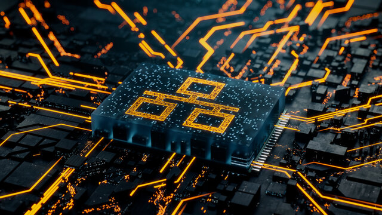

what is Ethernet
Ethernet is by far the most prevalent wired LAN technology, and it is likely to remain so for the foreseeable future.
There are many reasons for Ethernet’s success.
First, Ethernet was the first widely deployed high-speed LAN.
Second, other technologies (i,.e. token ring, fiber distributed data interface (FDDI), and ATM) were more complex and expensive than Ethernet.
Third, the most compelling reason to switch to another LAN technology (such as FDDI or ATM) was usually the higher data rate of the new technology.

Ethernet comes in many different flavors, with confusing acronyms such as 10BASE-T,
10BASE-2, 100BASE-T, 1000BASE-FX, and 10GBASE-T.
The first part of the acronym refers to the speed in Megabit or Gigabit per second of the
standard: 10, 100, 1000, or 10G.
BASE refers to baseband Ethernet, meaning that the physical media only carries Ethernet traffic;
almost all of the 802.3 standards are for baseband Ethernet.
The final part of the acronym refers to the physical media itself; Ethernet is both a link-layer
and a physical-layer specification.
“T” refers to twisted-pair copper wires
“2” refers two types of coaxial cable
“FX” refers to fiber optics cable.